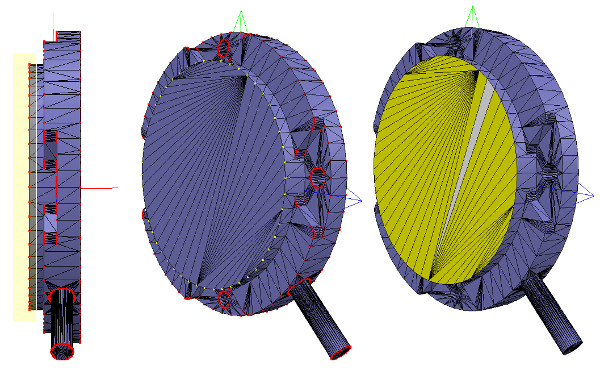

W16 <<
Previous Next >> NX12
W17
分組翻譯內容
接合件
大多數時候，我們知道每個接合件的確切位置和方向。我們只需使用 [Menu bar --> Add --> Joint --> ….]即可添加接合件，然後可以使用”位置”對話框和”方向”對話框更改它們的位置和方向。
但在只有Denavit-Hartenberg（即D-H）參數的情況下。我們可以通過模型瀏覽器中位於Models / tools / Denavit-Hartenberg聯合creator.ttm中的工具模型來構建接合件。
而當我們沒有關於接合件的位置和方向的信息時。我們需要從導入的網格中提取數據。
第一步是細分原始網格。如果無法進行，可以透過三角形編輯模式進行操作。成功後即可檢查較小的零組件。
在創建過程中我們要刪除所有不需要的對象，以便可視化/操作。
我們可以通過頁面選擇器工具欄按鈕更改視角，以便從側面查看對象。 適合查看的工具欄按鈕可以派上用場，以正確構圖版本中的對象。 然後，我們切換到頂點編輯模式，並選擇屬於上光盤的所有頂點。 然後我們切換回三角形編輯模式：

[選擇的上光盤，頂點編輯模式（1和2），三角形編輯模式（3）]
現在，通過 [Menu bar --> Add --> Joint --> Revolute] 添加旋轉接合件，使其保持選中狀態，然後控制選擇提取的圓柱形狀。在位置對話框的“位置”選項卡上，單擊“應用於選擇”：這基本上將圓柱體的x / y / z座標位置複製到關節。現在兩個位置都相同。在方向對話框中的方向選項卡上，我們還單擊“應用於選擇”：所選對象的方向現在也相同。有時，我們將需要圍繞其自身的參考框架額外旋轉關節90/180度，以獲得正確的方向或旋轉方向。如果需要，我們可以在該對話框的“旋轉”選項卡上執行此操作（在這種情況下，請不要忘記單擊“自有框架”按鈕）。同樣，我們也可以沿關節的軸移動關節，甚至進行更複雜的操作。這就是我們所擁有的
現在，我們將接合件複製回到原始場景中，並保存它
（不要忘記定期保存您的工作！）
我們對機器人中的所有關節重複上述過程，並且重新命名它們。
在默認情況下，接合件將分配給可見性層2，但現在，我們將所有關節分配給可見性層10，然後為場景臨時啟用可見性層10，以使這些關節也可視化（默認情況下，僅激活場景的可見性層1-8）。
這就是我們所建立完成的：

此時，我們可以開始構建模型層次結構並完成模型定義
W16 <<
Previous Next >> NX12